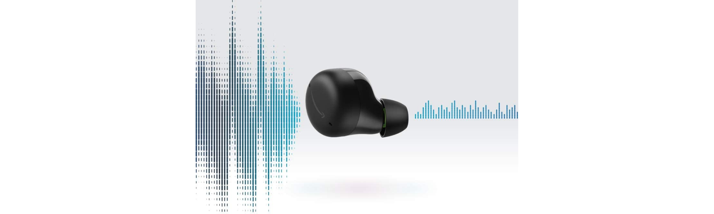

I was a UX Design Intern for the Amazon Alexa organization in 2021 and returned as a full-time UX Designer in 2022. I designed two new features for Echo Buds 2 to improve customer safety on-the-go. These features included gesture and voice design. My design decisions were backed by customer research and I iterated my work based on feedback I received during design presentations.
In addition to design, I’ve done UX research during my time at Amazon. I moderated on-site usability studies with an Alexa product prototype to measure customer satisfaction and determine if products were market-ready. I’ve also created surveys and interview questions for Qualtrics and UserTesting in order to understand customer needs and guide long-term decision making for leadership.
Due to NDA, I can’t publicly show my design process or final deliverables.
I’d be happy to discuss my work in more detail in an interview.
Please reach out to me via
LinkedIn or email: ryhartanto@gmail.com.